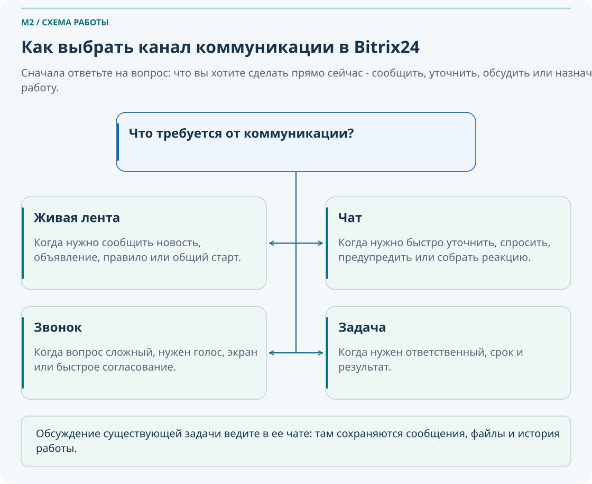
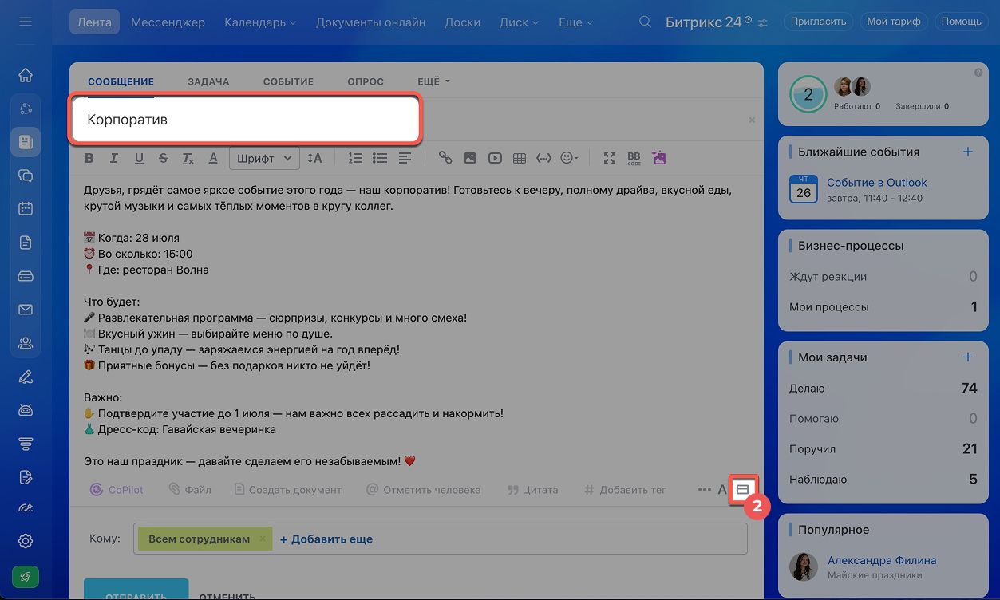
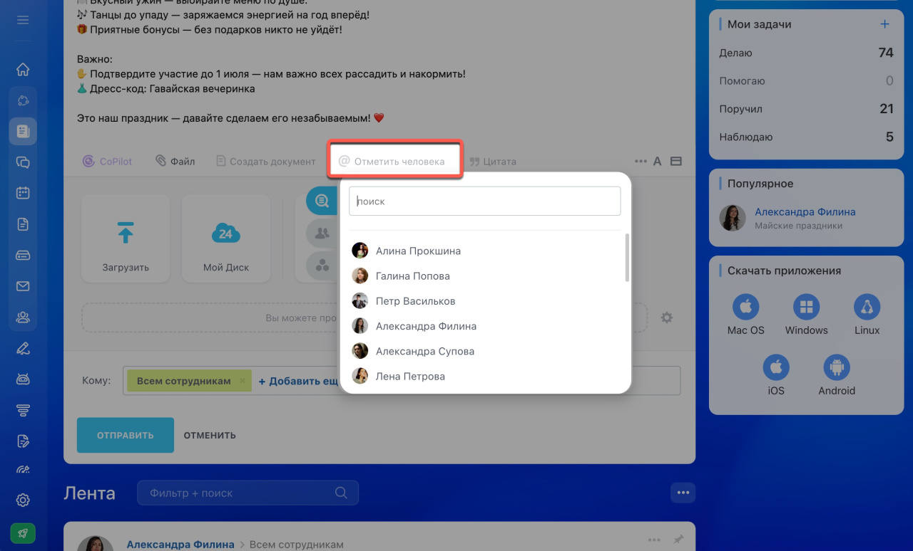
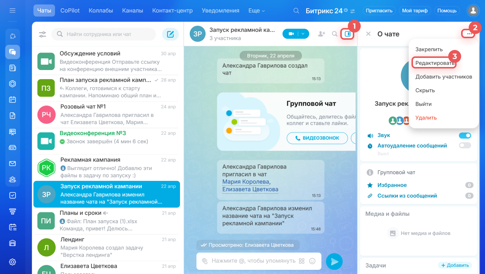
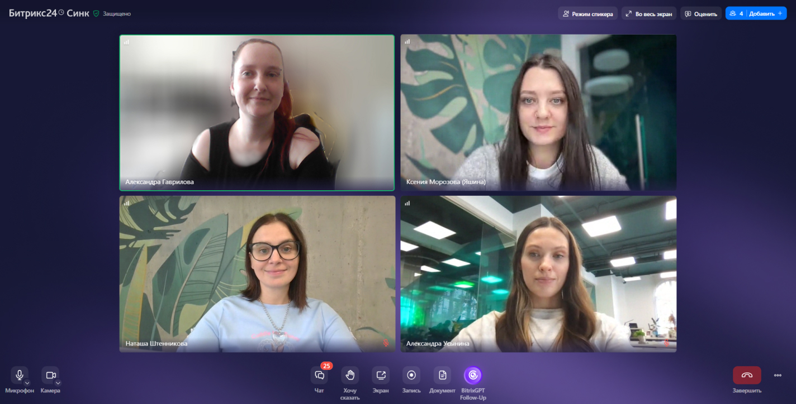
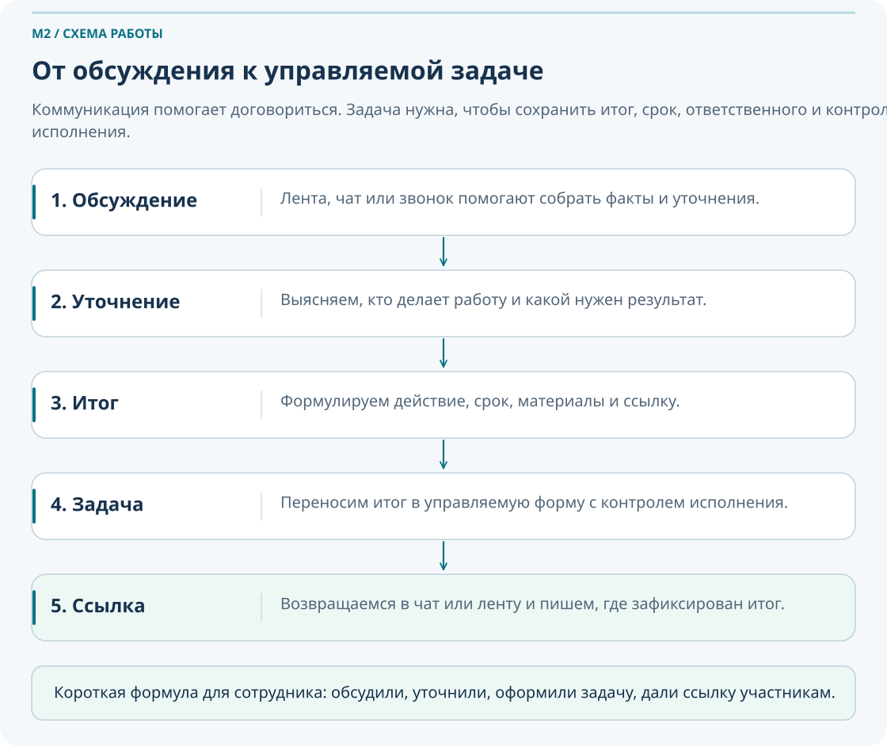
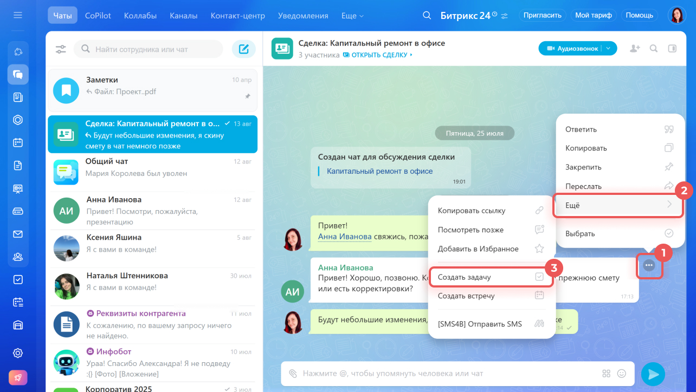

Коммуникации: живая лента, чаты, видеозвонки
Этот модуль учит не просто пользоваться лентой, чатами и звонками, а осознанно выбирать канал коммуникации по рабочей ситуации и переводить договорённости в управляемый результат. Главная идея M2: обсуждение само по себе не равно выполненной работе, если итог не зафиксирован в задаче, комментарии или официальном сообщении.
Что важно понять в M2
- В этом модуле не нужно изучить все коммуникационные возможности Битрикс24.
- Нужно научиться выбирать правильный канал: когда писать в ленту, когда использовать чат, когда созваниваться, а когда сразу создавать задачу.
- Нужно понять разницу между сообщением, обсуждением, уведомлением и зафиксированной договорённостью.
- Нужно уметь завершать коммуникацию результатом, а не бесконечной перепиской.
Результат прохождения
- Сотрудник объясняет разницу между лентой, чатом, звонком и задачей.
- Сотрудник публикует сообщение в ленте и понимает, когда это уместно.
- Сотрудник использует личные и групповые чаты без смешения тем.
- Сотрудник понимает, когда звонок лучше переписки.
- Сотрудник умеет переводить итог обсуждения в задачу.
1. Введение
Для кого модуль
Для сотрудников, которые уже освоили вход в портал, базовую навигацию, профиль, уведомления и поиск, но ещё не выстроили осознанный рабочий стиль коммуникации внутри Битрикс24.
Чему научится сотрудник
Выбирать канал коммуникации по ситуации, писать в ленту, использовать личные и групповые чаты, запускать звонки и фиксировать итог разговора в задаче.
Что не требуется на этом этапе
Не нужно знать CRM, автоматизацию, сложные роли администрирования и глубокие сценарии интеграций. M2 про базовую рабочую коммуникацию.
После M2 сотрудник не должен спорить, «где написать», на уровне привычки. Он должен быстро понимать: нужно ли просто сообщить, уточнить, обсудить голосом или сразу ставить задачу.
Паспорт модуля
Место в курсе
После M1, до модулей о рабочих группах, задачах и проектах
Входной уровень
- Сотрудник умеет войти в портал.
- Ориентируется в основном меню.
- Знает, где находятся профиль, поиск и уведомления.
- Понимает базовую логику M1: сначала ищем и разбираемся, потом спрашиваем.
Целевая аудитория
Сотрудники, руководители и участники рабочих процессов, которым нужно уверенно применять материал модуля в ежедневной работе.
Итоговый результат
После M2 сотрудник умеет выбрать подходящий канал коммуникации, опубликовать сообщение в ленте, написать в личный или групповой чат, провести звонок и зафиксировать рабочую договорённость в задаче.
После M2 сотрудник умеет выбрать подходящий канал коммуникации, опубликовать сообщение в ленте, написать в личный или групповой чат, провести звонок и зафиксировать рабочую договорённость в задаче.
3. Коммуникации в Битрикс24: общая логика
Что это: в Битрикс24 коммуникации распределены по нескольким каналам, и каждый из них нужен для своей рабочей задачи.
Зачем это сотруднику: если выбирать канал случайно, информация теряется, люди не понимают, кто должен действовать, а важные договорённости так и остаются в переписке.
Когда использовать: каждый раз, когда вы хотите что-то сообщить, обсудить, согласовать или поручить.
Когда не использовать наугад: когда от результата зависят сроки, ответственность, документы, согласования или работа нескольких людей.
Если нужно информировать многих — лента.
Если нужно быстро уточнить — чат.
Если нужно обсудить сложное — звонок.
Если нужно выполнить и проконтролировать — задача.
Если обсуждение касается уже созданной задачи — сообщение в чате задачи.
| Канал | Когда использовать | Когда не использовать как основной | Риск неправильного выбора |
|---|---|---|---|
| Живая лента | Новости, объявления, регламенты, сообщения группе, опросы | Для личных уточнений и поручений без ответственного | Люди прочтут, но никто не поймёт, кто должен действовать |
| Личный чат | Быстрый вопрос, короткое уточнение, оперативная связь один на один | Для длительной координации команды и хранения итогов работы | Поручение останется в диалоге без контроля |
| Групповой чат | Оперативные вопросы по объекту, команде или теме | Для широких объявлений и для фиксации управляемого результата | Смешение тем, потеря решения, длинные бесконечные обсуждения |
| Видеозвонок | Сложный вопрос, необходимость быстро договориться, демонстрация экрана | Если итог никто не зафиксирует после разговора | Все «поняли», но никто не может доказать, что именно решили |
| Задача | Когда нужен ответственный, срок, результат и контроль | Для простого дружеского обмена сообщениями | При отсутствии задачи работа неуправляема |
Чат — это обсуждение. Лента — это информирование. Звонок — это способ быстро договориться. Задача — это управление исполнением. Чем важнее результат, срок и ответственность, тем быстрее обсуждение должно перейти из чата или звонка в задачу.

Если руководитель пишет в общий чат: «Подготовьте завтра акт по объекту», это ещё не управление работой. Правильный шаг — после короткого обсуждения создать задачу с ответственным, сроком, приложением шаблона и понятным ожидаемым результатом.
Для пяти коротких рабочих ситуаций определите, нужен ли вам канал информирования, оперативного общения, звонок или задача.
Разберите один реальный пример из вашей работы: где у вас обсуждение обычно идёт в чате, хотя давно должно завершаться задачей.
Сформулируйте своими словами правило: как вы определяете момент, когда переписка уже должна перейти в управляемую задачу.
Раздел освоен, если вы можете объяснить, почему чат не заменяет задачу, а лента не заменяет управляемое поручение.
4. Живая лента
Что это: живая лента — общий информационный канал компании, отдела или рабочей группы.
Зачем это нужно: лента позволяет донести единое сообщение нескольким людям сразу и сохранить его в понятном контексте, а не разносить по разным чатам и личным перепискам.
Когда использовать: новости, объявления, регламенты, сообщения для отдела, опросы, публикация рабочих материалов, которые должны увидеть несколько участников.
Когда не использовать: для личных вопросов, хаотичных обсуждений и поручений, где нужен ответственный и срок.
Плохое сообщение в ленте
- Нет понятной темы.
- Не указано, кому адресовано сообщение.
- Неясно, что именно нужно сделать.
- Нет ссылки на документ или вложения.
Хорошее сообщение в ленте
- Есть краткая тема и контекст.
- Понятно, кому адресовано сообщение.
- Есть следующий шаг: что делать и где смотреть.
- Есть файл, ссылка или приложение, если это нужно.
Структура хорошего сообщения
- Тема: о чём сообщение в одном понятном предложении.
- Контекст: что произошло, к какому объекту или событию это относится.
- Действие: что нужно сделать, кому и к какому сроку, если действие требуется.
- Материалы: файл, ссылка, схема, документ, протокол.
- Следующий шаг: где будет вестись обсуждение или где будет зафиксирован итог.
Команда начинает работы по учебному объекту. Руководитель публикует сообщение в ленте: указывает старт работ, список участников, прикладывает схему, отмечает ответственного за координацию и пишет, что оперативные вопросы ведутся в отдельном чате, а ключевые поручения оформляются задачами.

Откройте ленту и найдите поле для публикации нового сообщения.
Составьте сообщение в ленте для команды: тема, адресаты, краткий контекст и один вложенный файл или ссылка.
Объясните, почему сообщение в ленте подходит для общего информирования, но не должно заменять задачу, если нужна ответственность и срок.
Комментарии, упоминания и опросы
Комментарии помогают развивать обсуждение под конкретной публикацией, а упоминания через @ позволяют привлечь нужного сотрудника к ответу или уточнению. Опросы нужны, когда важно быстро собрать мнение команды и не превращать выбор в длинную переписку.

Нужен, если вы уточняете или дополняете конкретную публикацию.
Нужно, если конкретный сотрудник должен увидеть вопрос или сообщение.
Нужен, если нужно быстро выбрать вариант, время, формат или приоритет.
Нужен, если обсуждение связано с документом, схемой, протоколом или шаблоном.
Нужен, чтобы участники понимали, что делать после прочтения публикации.
Начать длинное спорное обсуждение прямо в ленте, хотя вопрос уже требует отдельного чата, звонка или постановки задачи.
Раздел освоен, если вы можете составить понятное сообщение в ленте и понимаете, когда обсуждение под публикацией стоит остановить и перевести в другой формат.
5. Чаты
Что это: чат — инструмент для быстрого обмена сообщениями и оперативной координации.
Зачем нужен: в чате удобно уточнять, договариваться, сообщать о мелких изменениях и быстро собирать реакцию участников.
Когда использовать: быстрый вопрос, уточнение, напоминание, короткая координация между конкретными людьми или внутри рабочей группы.
Когда не использовать как единственное место хранения договорённостей: когда нужно зафиксировать ответственного, срок, итог, вложения и контроль исполнения.
Личный чат
- Подходит для короткого прямого вопроса одному человеку.
- Хорош для уточнения, но плох как место для хранения итогов по целому проекту.
- Если из диалога рождается поручение, оно должно перейти в задачу.
Групповой чат
- Подходит для оперативных вопросов по объекту, бригаде, проекту или теме.
- Должен иметь понятное название.
- Должен начинаться с короткого объяснения назначения чата.
- Не должен превращаться в свалку разных тем.
| Ситуация | Лучший чат | Что сделать после общения |
|---|---|---|
| Быстро уточнить один вопрос у коллеги | Личный чат | Если вопрос разовый, достаточно ответа; если возникло поручение, оформить задачу |
| Согласовать детали по объекту с несколькими людьми | Групповой чат | Подвести итог и оформить действия в задаче |
| Обсуждение стало слишком длинным | Чат как старт, затем звонок или задача | Свести итог, сократить шум, зафиксировать решение |
Название рабочего чата должно сразу отвечать на вопрос: о чём этот чат и кто в нём должен работать. Например: «Объект ПС-110 кВ / Пусконаладка», «ПТО / Шаблоны актов», «Смена №2 / Выездные работы».
После публикации в ленте команда создаёт групповой чат «Учебный объект / Старт работ». В первом сообщении фиксируется цель чата: обсуждаем только оперативные вопросы запуска, а все поручения по срокам и ответственным уводим в задачи.

Откройте список чатов и найдите личный и групповой формат общения.
Составьте пример названия рабочего чата и первое сообщение, которое объясняет его назначение.
Определите, в каком месте обычная переписка в чате начинает вредить работе и должна перейти в задачу или звонок.
Смешивать в одном групповом чате оперативные вопросы, общие объявления, поручения по разным объектам и личные уточнения. Такой чат быстро превращается в поток шума без управляемого результата.
Раздел освоен, если вы можете объяснить, когда достаточно личного чата, когда нужен групповой, и как избежать превращения чата в неуправляемый архив сообщений.
6. Видеозвонки
Что это: видеозвонок — встроенный способ быстро обсудить сложный вопрос голосом и при необходимости показать экран.
Зачем нужен: не всё эффективно обсуждать перепиской. Когда вопрос сложный, требует пояснения, согласования нескольких участников или демонстрации документа, звонок экономит время.
Когда использовать: спорный вопрос, срочное согласование, демонстрация схемы, календаря, документа или экрана задачи.
Когда не останавливаться на звонке: когда после разговора нужен измеримый итог, поручение или контроль исполнения.
Как подготовиться к звонку
- Понять, зачем звонок вообще нужен, а не писать текстом.
- Собрать участников, действительно относящихся к вопросу.
- Открыть нужный документ, задачу или экран заранее.
- Сформулировать, какой итог должен быть у разговора.
Что обязательно сделать после звонка
- Кратко записать, о чём договорились.
- Если есть действие — создать задачу или обновить уже существующую.
- Сообщить участникам, где зафиксирован итог.
В переписке не удаётся быстро согласовать последовательность работ на объекте. Команда собирает короткий звонок, показывает схему экрана, за 10 минут договаривается о порядке действий, а после звонка руководитель оформляет задачу с итогом и пишет в чат ссылку на неё.

Найдите в интерфейсе чата кнопку запуска звонка и определите, где включаются микрофон и камера.
Смоделируйте короткий звонок по рабочей теме и сформулируйте, какой итог должен быть зафиксирован после него.
Объясните, в каких случаях звонок экономит время, а в каких превращается в лишнюю встречу без результата.
Провести звонок, «всё обсудить», разойтись и не зафиксировать ни одного действия. Через несколько часов участники уже по-разному помнят, к чему пришли.
Раздел освоен, если вы понимаете, когда звонок уместнее переписки и почему любой важный итог звонка должен быть записан в задаче, комментарии или официальном сообщении.
7. От обсуждения к задаче
У сообщения в мессенджере откройте меню действий и выберите создание задачи. Проверьте перенесенный текст, исполнителя, срок и ожидаемый результат. После создания продолжайте работу в чате этой задачи; в исходной переписке оставьте ссылку. Комментарий к публикации в ленте и сообщение в чате задачи находятся в разных контекстах. Как создать задачу из сообщения.
Что это: мост между коммуникацией и управляемой работой.
Зачем это нужно: пока поручение живёт только в чате или было сказано на звонке, оно неуправляемо. Задача делает результат контролируемым.
- Кто должен выполнить действие.
- Что именно считается результатом.
- К какому сроку нужен результат.
- Какие материалы и ссылки относятся к выполнению.
- Какой следующий шаг после завершения задачи.
Плохая фиксация
«Иван, посмотри завтра этот вопрос по объекту».
- Нет результата.
- Нет понятного срока.
- Нет вложений и контекста.
- Нет общей видимости для остальных участников.
Хорошая фиксация
«Подготовить перечень замечаний по объекту ПС-110 кВ, приложить файл, срок — завтра до 16:00, ответственный — Иван Петров».
- Есть результат.
- Есть срок.
- Есть ответственный.
- Есть материал для работы.
Поняли проблему или согласовали направление действий.
Кто делает, что делает и к какому сроку.
Перенесли решение в управляемую форму.
Написали участникам, где теперь зафиксирован итог.
Дальше живём уже не в хаотичной переписке, а в задаче.


Хорошая практика звучит так: «Обсудили в чате, уточнили на звонке, зафиксировали в задаче, вернулись в чат и дали ссылку на задачу».
8. Сквозная практика: «От сообщения к результату»
Этот маршрут проходит через весь модуль и показывает, как связать коммуникацию с действием.
Нужно сообщить о старте работ
Команда должна получить единый контекст и общий старт.
Выбираем ленту
Публикуем сообщение для нужной группы сотрудников.
Добавляем адресатов и материалы
Прикладываем файл, ссылку или схему.
Получаем уточнения
Комментарии и упоминания собираются под публикацией.
Создаём групповой чат
Переносим оперативные вопросы в отдельное пространство.
Проводим короткий звонок
Обсуждаем детали, которые неудобно решать текстом.
Формулируем итог
Сразу фиксируем, что именно решили и кто действует дальше.
Создаём задачу
Переводим договорённость в управляемую работу.
9. Что делать, если…
Если не знаете, куда написать
Вернитесь к правилу выбора канала: информировать многих — лента; быстро уточнить — чат; обсудить сложное — звонок; исполнить и проконтролировать — задача.
Если обсуждение в чате стало слишком длинным
- Остановите поток сообщений кратким резюме.
- Если вопрос сложный — переведите обсуждение в звонок.
- Если уже ясен итог — создайте задачу и сообщите о ней участникам.
Если поручение дали в чате
Не оставляйте его только в переписке. Попросите оформить задачу или создайте её самостоятельно, если это допустимо по роли и процессу вашей команды.
Если после звонка все договорились устно
Сразу после звонка напишите краткий итог и оформите задачу с ответственным, сроком и ожидаемым результатом.
Если в ленте началось длинное обсуждение не по теме
Сверните общий поток: перенесите оперативную часть в чат, а если нужен результат и контроль — в задачу.
Если участник не отвечает в чате
- Проверьте статус и наличие упоминания.
- При срочности напишите с упоминанием
@. - Если вопрос действительно срочный и влияет на работу, перейдите к звонку.
- Но итог всё равно фиксируйте письменно.
Если нужно быстро собрать мнение команды
Используйте опрос в ленте или чате, а не длинную переписку с десятком ответов в свободной форме.
10. Типичные ошибки новичков
Оставлять поручение только в чате и считать, что этого достаточно для контроля исполнения.
Писать в ленту то, что адресовано одному человеку и не несёт смысла для группы.
Создавать групповой чат без понятного названия и без правил использования.
Делать видеозвонок без цели, а после него ничего не фиксировать.
Путать обсуждение с управлением: много слов, но нет ни задачи, ни результата.
Собирать голосование в комментариях вместо использования встроенного опроса.
11. Самопроверка
Вопросы ниже проверяют не только знание интерфейса, но и понимание логики коммуникации.
Вопросы
- Когда лучше использовать живую ленту, а не чат?
- Когда короткий вопрос лучше решать в личном чате?
- В каком случае групповой чат уместнее, чем личная переписка?
- Почему видеозвонок не должен быть конечной точкой рабочего обсуждения?
- Почему поручение нельзя оставлять только в чате, если нужен срок и результат?
- Что должно быть в задаче по итогам обсуждения?
- Когда уместен опрос в ленте или чате?
- Что делать, если обсуждение уже явно вышло за рамки быстрой переписки?
Проверить свои ответы
- Когда нужно проинформировать группу сотрудников или компанию и сохранить единый источник сообщения.
- Когда нужно быстро уточнить один короткий вопрос у конкретного человека.
- Когда вопрос касается нескольких участников по объекту, проекту или теме.
- Потому что его итог нужно зафиксировать письменно: в задаче, комментарии или официальном сообщении.
- Потому что в чате нет гарантированного контроля исполнения, а задача фиксирует срок, результат и ответственного.
- Ответственный, срок, ожидаемый результат и при необходимости файлы или ссылка на контекст.
- Когда нужно быстро выбрать вариант и не превращать решение в длинную переписку.
- Подвести промежуточный итог и перевести вопрос в звонок или задачу — в зависимости от цели.
12. Итоговое практическое задание
Сценарий: команда начинает работу по учебному объекту. Нужно проинформировать участников, организовать оперативную коммуникацию, обсудить детали и зафиксировать поручение.
- Опубликуйте сообщение в ленте.
- Укажите адресатов.
- Добавьте файл или ссылку.
- Напишите комментарий с упоминанием коллеги.
- Создайте групповой чат.
- Проведите короткий звонок.
- Сформулируйте итог звонка.
- Создайте задачу по итогам обсуждения.
- Вернитесь в чат и сообщите, что задача создана.
Критерии успешного прохождения
- Сотрудник может объяснить разницу между лентой, чатом, звонком и задачей.
- Сотрудник выбирает канал коммуникации по ситуации.
- Сотрудник публикует понятное сообщение в ленте.
- Сотрудник умеет использовать комментарии и упоминания.
- Сотрудник создаёт личный и групповой чат.
- Сотрудник понимает правила названия рабочих чатов.
- Сотрудник запускает звонок и понимает логику демонстрации экрана.
- Сотрудник фиксирует договорённости в задаче.
13. Что дальше в курсе
Если после M2 вы уже не путаете информирование, переписку, звонок и задачу, то база для следующих модулей собрана правильно.